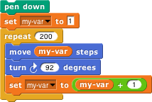
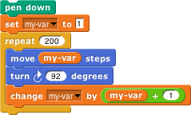

Suppose we didn't have the for block. We could do the equivalent using a repeat block:

Focus your attention on the last block in the script, the set block. Each time through the repeat loop, this block takes the current value of my-varmy-var.
This process of adding 1 to a variable is so common that there is an abbreviation for it:
It's a common mistake to get confused between set and change. The way to avoid confusion is to remember that set is the fundamental block for giving a variable a value, and that change abbreviates two references to the variable: getting the old value and setting a new value. Or, if you want, you can just not use change at all.
The script below has a bug in it; the last block is change instead of set as it should be. Make a list of the first ten values that my-var will have as the script runs.

Fix the script so that it still uses change, but it works as expected. (You don't have to add any blocks.)